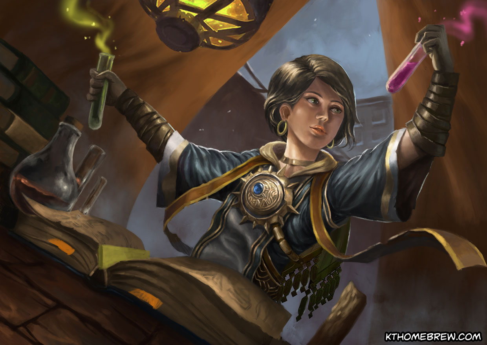
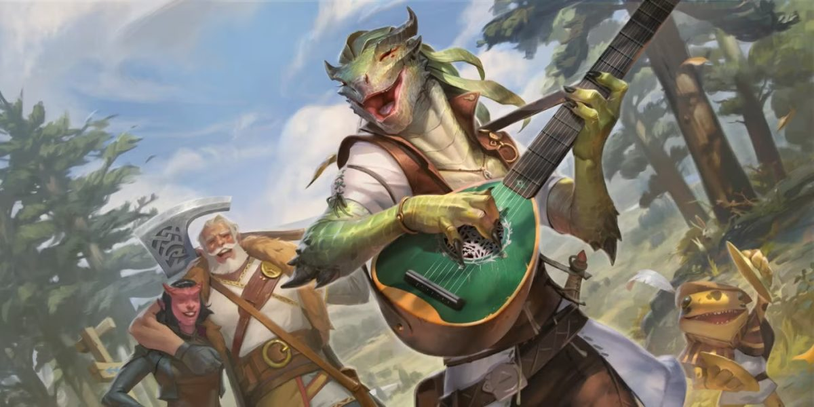
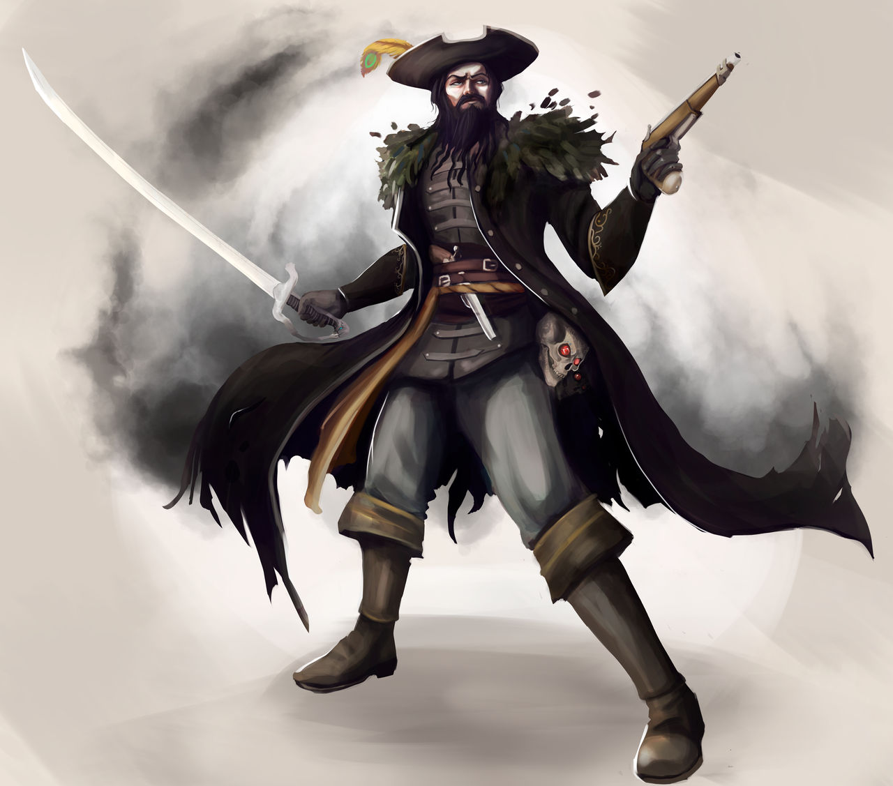
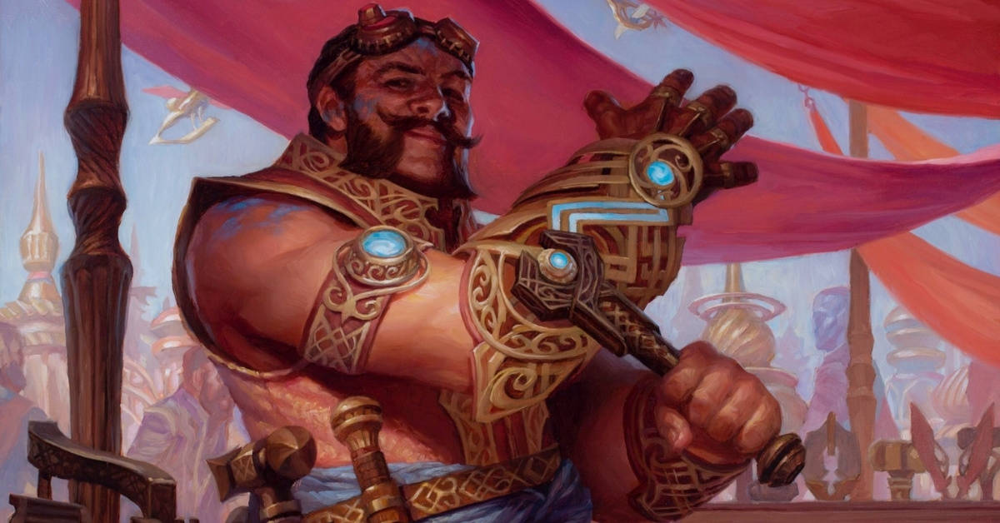
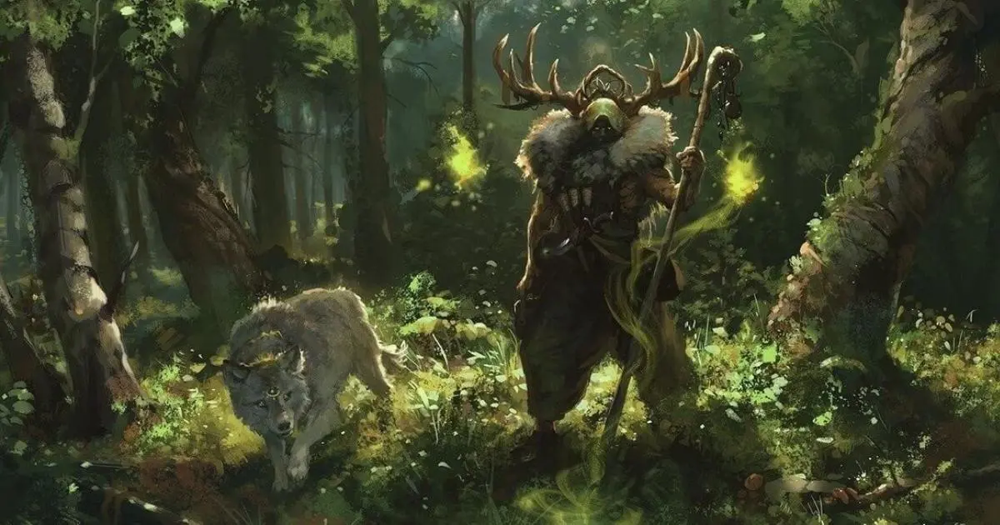
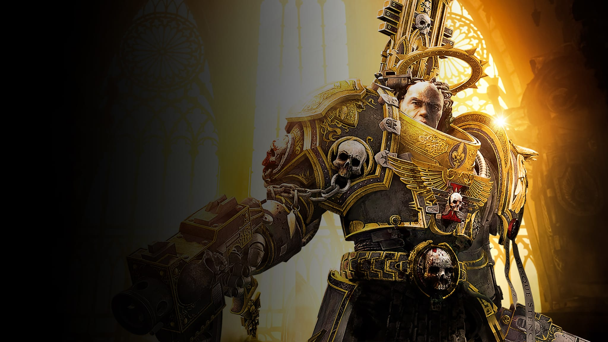
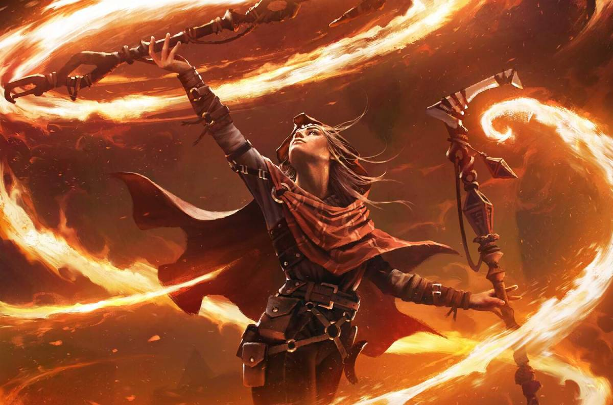
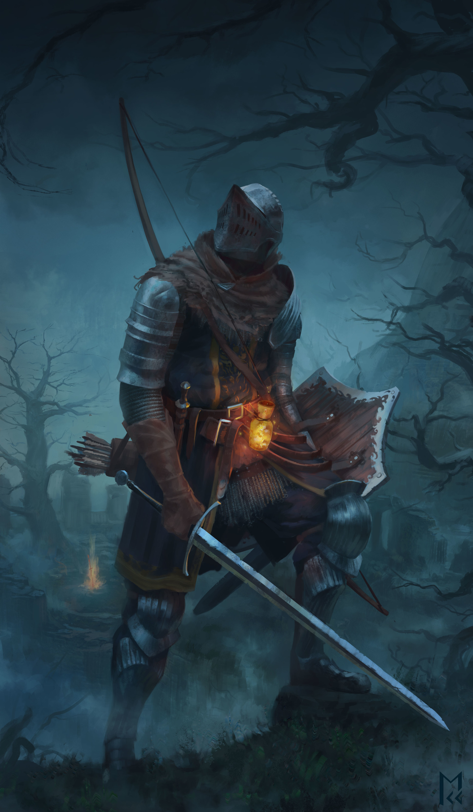
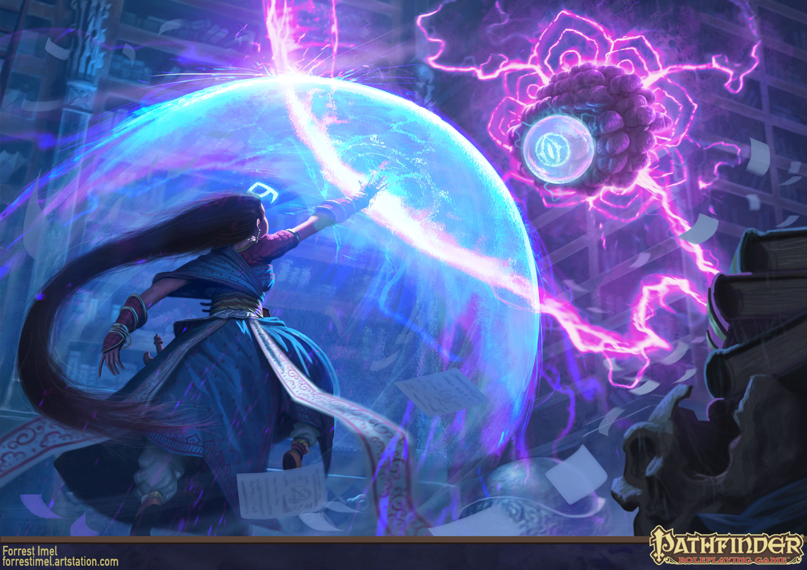
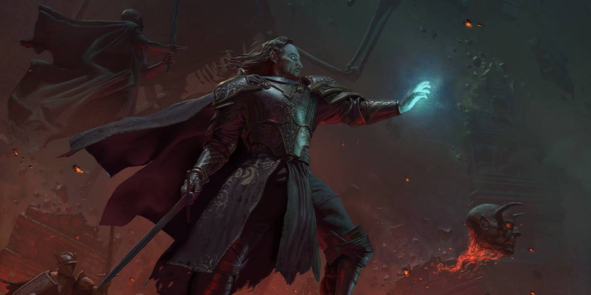

Todas as classs disponíveis em Starbound
Há diversas classes em Starbound vindas de diferentes lugares, além das que já existem em DnD 5e, há também mudanças em muitas das classes e novas subclasses adicionadas, aqui terá algumas mudanças que foram feitas
para algumas das classes, existem muitas classes disponíveis, sendo elas:
- Alquimista, uma classe que foca em bombas e concussões poderosas para auxiliar em combate
- Artífice, que usa poderosas bugigangas para lidar com qualquer situação
- Bárbaro, que é um poderoso brutamontes
- Bardo, que é um grande cantor ou ator carismático
- Capitão , que é um incrível comandante em batalha
- Clérigo, que é um curandeiro e ofensor
- Artesão, que aperfeiçoa armamentos para si e seus aliados
- Druida, que usa os poderes da natureza
- Guerreiro, um ótimo combatente
- Atirador, que usa pistolas e armas de fogo
- Investigador que investiga
- Mártir que se sacrifica pelos outros
- Psionico, que usa poderes mentais para atacar
- Monge que consegue derrotar inimigos com as mãos
- Necromancer, que traz de volta os mortos para lutar por ele
- Paladino, um guerreiro divino, devoto á um juramento
- Patrulheiro, que é um com a natureza e a caça
- Ladino, que se esgueira pelas sombras, atacando pelas costas
- Feiticeiro, capaz de tornar magias já poderosas em algo novo
- Guardião, que é um grande defensor de seus aliados
- Bruxo, que faz um pacto com uma entidade poderosa pelos seus poderes
- Mago de Guerra, que aprende e aperfeiçoa o básico
- Bruxa que pode amaldiçoar seus inimigos
- Mago, o conjurador supremos de magias
- Duelista, que se move e ataca com estilo pelo campo de batalha
- Illriger, um guerreiro vindo diretamente do inferno
algumas classes não receberam mudanças grandes, outras já foram completamente refeitas, as classes que tomaram um rework completo tem suas próprias seções
Alquimista

Nenhuma Mudança
Artífice

Nenhuma Mudança
Bárbaro

Nenhuma Mudança
Bardo

Nenhuma Mudança
Capitão

Nenhuma Mudança
Clérigo

Nenhuma Mudança
Artesão

Nenhuma Mudança
Druida

Nenhuma Mudança
Lutador

Reworked
Atirador

Nenhuma Mudança
Investigador

Nenhuma Mudança
Mártir

Nenhuma mudança
Monge

Reworked
Necromancer

Buff
Paladino

Nenhuma Mudança
Ladino

Nenhuma Mudança
Feiticeiro

Nenhuma Mudança
Guardião

Nenhuma Mudança
Bruxo

Reworked
Mago de Guerra

Nenhuma Mudança
Bruxa

Nenhuma Mudança
Mago

Nenhuma Mudança
Psionico

Classe 5.5, adaptada para 5e
Illriger

Nenhuma Mudança